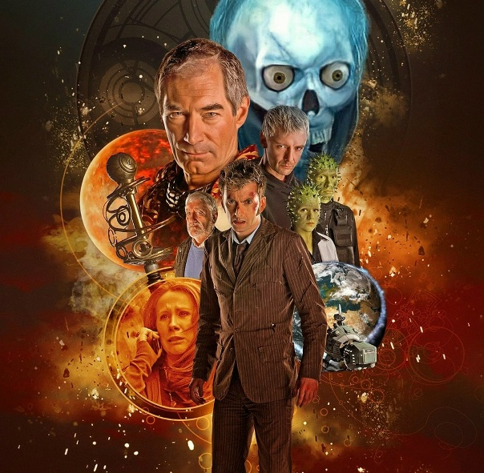

Эра Десятого Доктора
<<< НАЗАД ||| Конец времени ||| ДАЛЬШЕ >>>
MVO [TVShows] 2.0 + 5.1 / MVO [Кириллица] Sci-Fi
MVO [Baibako] - BaibakoTV (только первая часть)
MVO [Baibako] - 1001cinema / VO [Baibako] - Алексей Кузнецов
MVO [BeeFilm] + Original [ENG]
Субтитры: Русские {TrueTransLate} и Английские
 | |
The End of Time
рождественский и новогодний спецвыпуски
25 декабря 2009 / 1 января 2010
Формат:
60-минутный эпизод (часть 1)
70-минутный эпизод (часть 2)
| Варианты озвучек: | * Разные: смотрите по инструкции чаще всего это 17-я и 18-я серии четвертого сезона |
|---|---|
| Скачивание и просмотр: |
Мастер был возрождён, и он бродит по заброшенным пустырям Лондона, пока не попадает к вратам Бессмертия. А тем временем Уды предупреждают Доктора, что приближается огромная опасность, и что скоро наступит самый страшный день для Земли. Доктор и Уилф должны бороться в одиночку. Никто не должен умереть. И смертоносное пророчество гласит: «Он постучит четыре раза».

